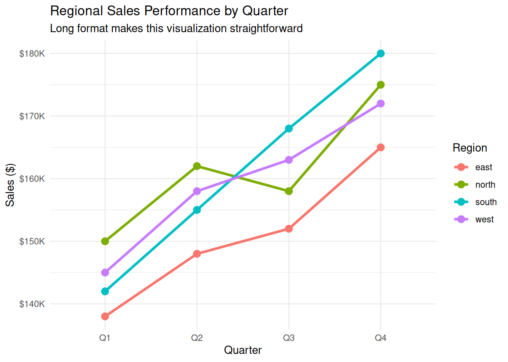

Data pivoting is the cornerstone of data tidying - the ability to transform data between wide and long formats. Think of it as rotating your data table to change its perspective. Wide format spreads variables across columns (good for human reading), while long format stacks data into rows (ideal for analysis and visualization).
Understanding Wide vs. Long Format
Let’s start with a clear comparison:
library(tidyverse)library(lubridate)# Wide format: Values spread across columnssales_wide <-tibble(quarter =c("Q1", "Q2", "Q3", "Q4"),north =c(150000, 162000, 158000, 175000),south =c(142000, 155000, 168000, 180000),east =c(138000, 148000, 152000, 165000),west =c(145000, 158000, 163000, 172000))cat("WIDE FORMAT: Each region is a separate column\n")
WIDE FORMAT: Each region is a separate column
print(sales_wide)
# A tibble: 4 × 5
quarter north south east west
<chr> <dbl> <dbl> <dbl> <dbl>
1 Q1 150000 142000 138000 145000
2 Q2 162000 155000 148000 158000
3 Q3 158000 168000 152000 163000
4 Q4 175000 180000 165000 172000
# Long format: Values stacked in rowssales_long <- sales_wide %>%pivot_longer(cols =c(north, south, east, west),names_to ="region",values_to ="sales" )cat("\nLONG FORMAT: All sales values in one column\n")
LONG FORMAT: All sales values in one column
print(sales_long)
# A tibble: 16 × 3
quarter region sales
<chr> <chr> <dbl>
1 Q1 north 150000
2 Q1 south 142000
3 Q1 east 138000
4 Q1 west 145000
5 Q2 north 162000
6 Q2 south 155000
7 Q2 east 148000
8 Q2 west 158000
9 Q3 north 158000
10 Q3 south 168000
11 Q3 east 152000
12 Q3 west 163000
13 Q4 north 175000
14 Q4 south 180000
15 Q4 east 165000
16 Q4 west 172000
cat("\nComparison:\n")
Comparison:
cat("Wide: ", nrow(sales_wide), " rows x ", ncol(sales_wide), " columns\n")
Wide: 4 rows x 5 columns
cat("Long: ", nrow(sales_long), " rows x ", ncol(sales_long), " columns\n")
Long: 16 rows x 3 columns
When to Use Each Format
cat("📊 WIDE FORMAT - Best for:\n")
📊 WIDE FORMAT - Best for:
cat("- Human-readable reports and dashboards\n")
- Human-readable reports and dashboards
cat("- Side-by-side comparisons\n")
- Side-by-side comparisons
cat("- Spreadsheet-style presentations\n")
- Spreadsheet-style presentations
cat("- Correlation matrices\n")
- Correlation matrices
cat("- Crosstabs and pivot tables\n\n")
- Crosstabs and pivot tables
cat("📈 LONG FORMAT - Best for:\n")
📈 LONG FORMAT - Best for:
cat("- ggplot2 visualizations\n")
- ggplot2 visualizations
cat("- Statistical modeling and analysis\n")
- Statistical modeling and analysis
cat("- Group-by operations with dplyr\n")
- Group-by operations with dplyr
cat("- Time series analysis\n")
- Time series analysis
cat("- Machine learning datasets\n\n")
- Machine learning datasets
# Demonstrate why ggplot2 prefers long formatlibrary(ggplot2)# This works beautifully with long formatsales_long %>%ggplot(aes(x = quarter, y = sales, color = region, group = region)) +geom_line(size =1.2) +geom_point(size =3) +scale_y_continuous(labels = scales::dollar_format(scale =1e-3, suffix ="K")) +labs(title ="Regional Sales Performance by Quarter",subtitle ="Long format makes this visualization straightforward",x ="Quarter",y ="Sales ($)",color ="Region" ) +theme_minimal()

pivot_longer(): Wide to Long
pivot_longer() transforms wide data to long format by “gathering” multiple columns into key-value pairs.
# A tibble: 5 × 9
employee_id name department communication_q1 communication_q2 teamwork_q1
<int> <chr> <chr> <dbl> <dbl> <dbl>
1 1 Alice Jo… Sales 4.2 4.3 4
2 2 Bob Smith Marketing 3.8 4 4.2
3 3 Carol Da… IT 4.5 4.6 4.3
4 4 David Wi… Sales 3.9 4.1 3.8
5 5 Emma Bro… Marketing 4.1 4.2 4.4
# ℹ 3 more variables: teamwork_q2 <dbl>, leadership_q1 <dbl>,
# leadership_q2 <dbl>
# Method 1: Basic pivot_longerperformance_long_basic <- performance_wide %>%pivot_longer(cols = communication_q1:leadership_q2, # Columns to pivotnames_to ="skill_quarter", # Name for the new key columnvalues_to ="rating"# Name for the new value column )cat("\nBasic pivot_longer result:\n")
Basic pivot_longer result:
print(head(performance_long_basic, 10))
# A tibble: 10 × 5
employee_id name department skill_quarter rating
<int> <chr> <chr> <chr> <dbl>
1 1 Alice Johnson Sales communication_q1 4.2
2 1 Alice Johnson Sales communication_q2 4.3
3 1 Alice Johnson Sales teamwork_q1 4
4 1 Alice Johnson Sales teamwork_q2 4.1
5 1 Alice Johnson Sales leadership_q1 3.8
6 1 Alice Johnson Sales leadership_q2 4
7 2 Bob Smith Marketing communication_q1 3.8
8 2 Bob Smith Marketing communication_q2 4
9 2 Bob Smith Marketing teamwork_q1 4.2
10 2 Bob Smith Marketing teamwork_q2 4.4
Advanced Column Selection
# Method 2: Using column selection helpersperformance_long_helpers <- performance_wide %>%pivot_longer(cols =contains("_q"), # All columns containing "_q"names_to ="skill_quarter",values_to ="rating" )# Method 3: Excluding specific columnsperformance_long_exclude <- performance_wide %>%pivot_longer(cols =-c(employee_id, name, department), # Everything except thesenames_to ="skill_quarter",values_to ="rating" )# Method 4: Using patterns with matches()performance_long_pattern <- performance_wide %>%pivot_longer(cols =matches("(communication|teamwork|leadership)_q[12]"), # Regex patternnames_to ="skill_quarter",values_to ="rating" )cat("All methods produce identical results:\n")
The real power comes when you separate the pivoted column names:
# Separate skill and quarter into different columnsperformance_tidy <- performance_wide %>%pivot_longer(cols =contains("_q"),names_to ="skill_quarter",values_to ="rating" ) %>%separate( skill_quarter,into =c("skill", "quarter"),sep ="_" ) %>%mutate(quarter =str_replace(quarter, "q", "Q"), # Clean up quarter formatquarter_num =as.numeric(str_extract(quarter, "\\d+")),skill =str_to_title(skill) )cat("Cleaned and separated data:\n")
Cleaned and separated data:
print(head(performance_tidy, 12))
# A tibble: 12 × 7
employee_id name department skill quarter rating quarter_num
<int> <chr> <chr> <chr> <chr> <dbl> <dbl>
1 1 Alice Johnson Sales Communication Q1 4.2 1
2 1 Alice Johnson Sales Communication Q2 4.3 2
3 1 Alice Johnson Sales Teamwork Q1 4 1
4 1 Alice Johnson Sales Teamwork Q2 4.1 2
5 1 Alice Johnson Sales Leadership Q1 3.8 1
6 1 Alice Johnson Sales Leadership Q2 4 2
7 2 Bob Smith Marketing Communication Q1 3.8 1
8 2 Bob Smith Marketing Communication Q2 4 2
9 2 Bob Smith Marketing Teamwork Q1 4.2 1
10 2 Bob Smith Marketing Teamwork Q2 4.4 2
11 2 Bob Smith Marketing Leadership Q1 3.5 1
12 2 Bob Smith Marketing Leadership Q2 3.7 2
# Now analysis becomes powerfulcat("\nAverage ratings by skill and quarter:\n")
pivot_wider() spreads key-value pairs into separate columns, creating the inverse of pivot_longer().
Basic Wide Transformation
# Start with our long performance datacat("Starting with long format data:\n")
Starting with long format data:
print(head(performance_tidy, 8))
# A tibble: 8 × 7
employee_id name department skill quarter rating quarter_num
<int> <chr> <chr> <chr> <chr> <dbl> <dbl>
1 1 Alice Johnson Sales Communication Q1 4.2 1
2 1 Alice Johnson Sales Communication Q2 4.3 2
3 1 Alice Johnson Sales Teamwork Q1 4 1
4 1 Alice Johnson Sales Teamwork Q2 4.1 2
5 1 Alice Johnson Sales Leadership Q1 3.8 1
6 1 Alice Johnson Sales Leadership Q2 4 2
7 2 Bob Smith Marketing Communication Q1 3.8 1
8 2 Bob Smith Marketing Communication Q2 4 2
# Convert back to wide format for reportingperformance_report <- performance_tidy %>%# Create quarter-skill combinationsunite("quarter_skill", quarter, skill, sep ="_") %>%pivot_wider(names_from = quarter_skill,values_from = rating ) %>%arrange(department, name)cat("\nConverted to wide format for reporting:\n")
Converted to wide format for reporting:
print(performance_report)
# A tibble: 10 × 10
employee_id name department quarter_num Q1_Communication Q2_Communication
<int> <chr> <chr> <dbl> <dbl> <dbl>
1 3 Carol D… IT 1 4.5 NA
2 3 Carol D… IT 2 NA 4.6
3 2 Bob Smi… Marketing 1 3.8 NA
4 2 Bob Smi… Marketing 2 NA 4
5 5 Emma Br… Marketing 1 4.1 NA
6 5 Emma Br… Marketing 2 NA 4.2
7 1 Alice J… Sales 1 4.2 NA
8 1 Alice J… Sales 2 NA 4.3
9 4 David W… Sales 1 3.9 NA
10 4 David W… Sales 2 NA 4.1
# ℹ 4 more variables: Q1_Teamwork <dbl>, Q2_Teamwork <dbl>,
# Q1_Leadership <dbl>, Q2_Leadership <dbl>
# Realistic scenario with missing dataincomplete_sales <-tibble(month =rep(c("Jan", "Feb", "Mar"), each =3),region =rep(c("North", "South", "West"), 3),sales =c(100, 150, NA, 120, NA, 180, 130, 160, 170))cat("Data with missing values:\n")
Data with missing values:
print(incomplete_sales)
# A tibble: 9 × 3
month region sales
<chr> <chr> <dbl>
1 Jan North 100
2 Jan South 150
3 Jan West NA
4 Feb North 120
5 Feb South NA
6 Feb West 180
7 Mar North 130
8 Mar South 160
9 Mar West 170
# Pivot wider with missing valuessales_matrix <- incomplete_sales %>%pivot_wider(names_from = month,values_from = sales,values_fill =0# Fill missing with 0 for this business case )cat("\nPivoted wide with missing values filled as 0:\n")
Pivoted wide with missing values filled as 0:
print(sales_matrix)
# A tibble: 3 × 4
region Jan Feb Mar
<chr> <dbl> <dbl> <dbl>
1 North 100 120 130
2 South 150 NA 160
3 West NA 180 170
# Alternative: Keep NAs and handle explicitlysales_matrix_na <- incomplete_sales %>%pivot_wider(names_from = month,values_from = sales# No values_fill - keeps NAs ) %>%mutate(total_known =rowSums(select(., Jan:Mar), na.rm =TRUE),months_reported =rowSums(!is.na(select(., Jan:Mar))),avg_monthly =round(total_known / months_reported, 1) )cat("\nWith explicit missing value handling:\n")
With explicit missing value handling:
print(sales_matrix_na)
# A tibble: 3 × 7
region Jan Feb Mar total_known months_reported avg_monthly
<chr> <dbl> <dbl> <dbl> <dbl> <dbl> <dbl>
1 North 100 120 130 350 3 117.
2 South 150 NA 160 310 2 155
3 West NA 180 170 350 2 175